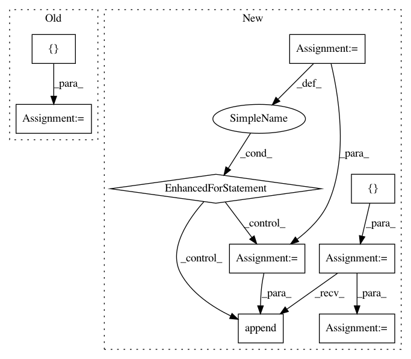

141ab53cc37dce728802803747584fc0fb82863b,examples/FasterRCNN/data.py,,get_all_anchors,#,57
Before Change
// Many rounding happens inside the anchor code anyway
// assert np.all(field_of_anchors == field_of_anchors.astype("int32"))
field_of_anchors = field_of_anchors.astype("float32")
field_of_anchors[:, :, :, [2, 3]] += 1
return field_of_anchors
@memoized
After Change
// Generates a NAx4 matrix of anchor boxes in (x1, y1, x2, y2) format. Anchors
// are centered on 0, have sqrt areas equal to the specified sizes, and aspect ratios as given.
anchors = []
for sz in sizes:
for ratio in ratios:
w = np.sqrt(sz * sz / ratio)
h = ratio * w
anchors.append([-w, -h, w, h])
cell_anchors = np.asarray(anchors) * 0.5
field_size = int(np.ceil(max_size / stride))
shifts = (np.arange(0, field_size) * stride).astype("float32")
shift_x, shift_y = np.meshgrid(shifts, shifts)
In pattern: SUPERPATTERN
Frequency: 4
Non-data size: 9
Instances
Project Name: tensorpack/tensorpack
Commit Name: 141ab53cc37dce728802803747584fc0fb82863b
Time: 2019-05-28
Author: ppwwyyxx@users.noreply.github.com
File Name: examples/FasterRCNN/data.py
Class Name:
Method Name: get_all_anchors
Project Name: p2irc/deepplantphenomics
Commit Name: 9ad7c9d68eb3c3af5afd3126823ba2ab85e9c702
Time: 2019-08-28
Author: jis860@discus-desk09.usask.ca
File Name: deepplantphenomics/countception_object_counter_model.py
Class Name: CountCeptionModel
Method Name: _parse_images
Project Name: hachmannlab/chemml
Commit Name: dc6a6bcf9b38013bc685925ec142f57c8206f44b
Time: 2019-04-02
Author: mojtabah@buffalo.edu
File Name: chemml/datasets/base.py
Class Name:
Method Name: load_xyz_polarizability
Project Name: interactiveaudiolab/nussl
Commit Name: fa6f47e7aee228226421c52e61cce4e1ab4cc099
Time: 2020-03-15
Author: prem@u.northwestern.edu
File Name: tests/ml/test_loss.py
Class Name:
Method Name: test_permutation_invariant_loss_tf